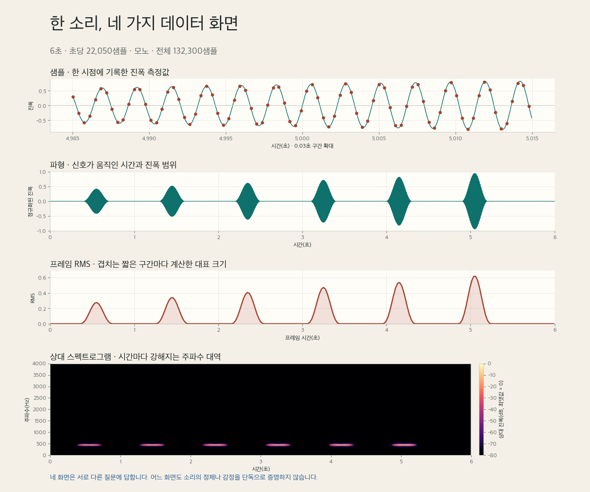

한 개의 WAV 파일을 시간, 크기, 주파수라는 세 질문으로 읽는 소리 데이터 입문
오늘의 학습 목표
- 샘플, 샘플링 레이트, 재생 시간, 채널의 관계를 자신의 말로 설명할 수 있습니다.
- 22,050Hz로 6초를 기록하면 모노 한 채널에 132,300개의 샘플이 생긴다는 계산을 할 수 있습니다.
- 파형의 가로축과 세로축을 읽고, 양수와 음수의 의미를 오해하지 않을 수 있습니다.
- 샘플과 프레임을 구분하고 프레임 길이와 이동 간격이 필요한 이유를 설명할 수 있습니다.
- RMS 곡선이 강한 구간을 비교하는 값이며 절대 음압이나 사람이 느끼는 음량과 같지 않음을 설명할 수 있습니다.
- 스펙트로그램의 시간축, 주파수축, 상대 dB 색상축을 읽고 시각화만으로 소리의 정체나 감정을 단정하지 않을 수 있습니다.
- 소리 자료의 출처와 이용 조건을 기록하고 타인의 음악과 목소리를 책임 있게 다룰 수 있습니다.
- 0-6분12주차 연결
같은 소리를 네 화면으로 보고 질문을 나눕니다.
- 6-15분샘플과 시간
샘플·레이트·길이·채널의 관계를 계산합니다.
- 15-25분파형 읽기
시간축과 진폭축, 봉우리의 뜻과 한계를 읽습니다.
- 25-34분프레임과 RMS
겹치는 짧은 구간으로 강한 시점을 찾습니다.
- 34-43분주파수와 STFT
시간마다 달라지는 주파수 분포를 색으로 읽습니다.
- 43-48분책임 있는 이용
저작권·음성 개인정보·출처 기록을 점검합니다.
- 48-50분개별 회수
샘플과 프레임, 파형과 스펙트로그램을 구분합니다.
수업 운영: 기본 50분과 확장 60분
기본 50분에는 공통 음원 한 편으로 소리를 수치로 기록하는 원리, 파형·RMS·스펙트로그램의 역할, 자료 이용의 책임까지 다룹니다. 모든 개별 확인이 끝난 경우에만 50-60분 확장에서 세 가지 창작 음원을 같은 조건으로 듣고 화면에 나타날 패턴을 먼저 예측합니다. Python 코드는 2교시에서 셀 단위로 실행합니다.
프로그래밍을 몰라도 먼저 붙잡을 문장
소리 파일은 시간 순서대로 놓인 매우 많은 수치이며, 파형·RMS·스펙트로그램은 같은 수치를 서로 다른 질문에 맞게 요약한 화면입니다.
0-6분 · 문장 순서에서 실제 시간으로 이동하기
12주차 문장 길이 흐름 그래프에서 한 점은 한 문장의 공백 기준 토큰 수였습니다. 가로축의 1, 2, 3은 초가 아니라 문장이 원문에 등장한 순서였습니다. 13주차 파형에서도 점이 왼쪽에서 오른쪽으로 놓이지만, 이번 가로축은 실제로 흘러간 시간입니다. 한 점은 정해진 순간에 측정한 소리 신호의 진폭을 뜻합니다.
| 구분 | 한 점의 뜻 | 가로축 | 세로축 | 분석 규칙 |
|---|---|---|---|---|
| 문장 길이 흐름 | 한 문장의 토큰 수 | 원문 등장 순서 1-12 | 공백 기준 토큰 수 | 문장 경계, 문장부호 정리, 공백 토큰화 |
| 소리 파형 | 한 시점의 진폭 샘플 | 실제 시간 0-6초 | 정규화된 진폭 -1~1 | 샘플링 레이트, 채널, 불러오기 방식 |
오늘의 공통 음원: 규칙적인 펄스
수업을 위해 직접 생성한 6초짜리 소리입니다. 약 0.9초 간격으로 440Hz의 짧은 펄스가 여섯 번 나타나며 뒤로 갈수록 진폭이 커집니다. 실제 사람의 목소리나 상업 음악을 포함하지 않으므로 모든 학생이 같은 조건에서 안전하게 분석할 수 있습니다.

눈으로 먼저 답할 수 있는 질문에 표시하기
“언제 신호가 크게 움직이는가?”, “어느 주파수 대역이 강한가?”, “무슨 악기가 연주되었는가?” 가운데 파형과 스펙트로그램만으로 근거 있게 답할 수 있는 질문에 표시합니다. 답할 수 없는 질문에는 추가로 필요한 정보를 적습니다.
확인: 네 화면 가운데 하나만 남겨도 같은 정보를 모두 알 수 있는가?
알 수 없습니다. 파형은 시간에 따른 진폭 변화에는 강하지만 구체적인 주파수 분포를 직접 보여 주지 않습니다. 스펙트로그램은 시간과 주파수를 함께 보여 주지만 개별 샘플 값을 읽기 어렵습니다. RMS는 강한 구간을 간단히 비교하지만 진동 방향과 주파수 구조를 요약 과정에서 잃습니다.
6-15분 · 샘플, 샘플링 레이트, 시간과 채널 구분하기
공기 중의 압력 변화는 끊어지지 않고 이어집니다. 컴퓨터는 이 연속적인 변화를 그대로 저장하지 않고, 일정한 시간 간격마다 값을 측정해 수치의 배열로 기록합니다. 이때 한 번 측정한 값을 샘플 sample, 1초 동안 몇 번 측정하는지를 샘플링 레이트 sampling rate라고 합니다.
| 용어 | 뜻 | 오늘의 값 | 확인 질문 |
|---|---|---|---|
| 샘플 | 특정 순간에 측정한 진폭 값 하나 | 모노 한 채널에 132,300개 | 배열에는 값이 몇 개 있는가? |
| 샘플링 레이트 | 1초에 기록하는 샘플의 수 | 22,050Hz | 1초를 몇 조각으로 측정했는가? |
| 재생 시간 | 전체 샘플을 해당 속도로 재생하는 길이 | 6초 | 샘플 수를 레이트로 나누면 얼마인가? |
| 채널 | 동시에 기록된 독립적인 신호의 수 | 모노 1채널 | 한 시점에 배열이 몇 줄 필요한가? |
1초의 측정 수에 전체 시간을 곱합니다.
모노 한 채널에 저장된 전체 측정값입니다.
반대로 전체 샘플 수를 샘플링 레이트로 나누면 재생 시간이 됩니다.
132300 samples ÷ 22050 samples/second = 6 secondsHz는 “1초에 몇 번”이라는 단위입니다. 샘플링 레이트의 22,050Hz는 1초에 22,050번 측정한다는 뜻입니다. 뒤에서 다룰 주파수의 440Hz는 진동이 1초에 440번 반복된다는 뜻입니다. 단위는 같지만 설명하는 대상이 다릅니다.
샘플링 레이트가 높으면 언제나 더 좋은 작품인가?
아닙니다. 높은 레이트는 더 촘촘한 시간 측정과 더 높은 주파수 범위를 가능하게 하지만, 녹음 장비·마이크 위치·잡음·압축·편집·재생 환경이 나쁘면 내용의 품질이 자동으로 좋아지지 않습니다. 파일 크기와 처리량도 늘어납니다. 수치는 기록 조건이며 작품의 완성도를 보증하는 점수가 아닙니다.
모노와 스테레오는 배열의 모양도 다르다
모노 mono는 한 개의 신호를 저장하므로 소리를 한 줄의 배열로 다룰 수 있습니다. 스테레오 stereo는 보통 왼쪽과 오른쪽 두 채널을 따로 저장합니다. 같은 6초·22,050Hz라도 스테레오에는 채널마다 132,300개의 샘플이 있으므로 전체 수치는 두 줄에 걸쳐 놓입니다.
| 파일 | 채널 수 | 채널당 샘플 | 분석할 때의 선택 |
|---|---|---|---|
| 모노 | 1 | 132,300 | 한 줄의 배열을 그대로 분석 |
| 스테레오 | 2 | 왼쪽 132,300 + 오른쪽 132,300 | 두 채널을 따로 보거나 하나로 합치는 규칙을 공개 |
계산: 44,100Hz 모노 소리 3초에는 샘플이 몇 개인가?
132,300개입니다. 44,100 × 3 = 132,300입니다. 오늘의 22,050Hz 소리 6초와 전체 샘플 수는 같지만, 1초에 측정하는 횟수와 재생 시간은 다릅니다.
확인: 샘플 132,300개라는 정보만으로 재생 시간이 6초라고 말할 수 있는가?
말할 수 없습니다. 같은 샘플 수도 샘플링 레이트에 따라 다른 시간이 됩니다. 재생 시간은 전체 샘플 수 ÷ 샘플링 레이트로 계산하므로 두 값이 모두 필요합니다.
15-25분 · 파형의 시간축과 진폭축을 정확히 읽기
파형 waveform은 시간 순서대로 놓인 샘플을 한 화면에 펼친 그림입니다. 가로축은 초 단위 시간이고, 세로축은 오늘 불러온 신호의 정규화된 진폭입니다. 파형은 “언제 신호가 크게 움직였는가?”, “침묵에 가까운 구간은 어디인가?”, “소리가 짧게 반복되는가?”와 같은 질문에 답하기 좋습니다.
| 읽는 곳 | 확인하는 것 | 오늘의 화면 | 주의할 해석 |
|---|---|---|---|
| 가로축 | 신호가 나타난 시간 | 0초부터 6초 | 문장 번호처럼 단순한 순서가 아니라 실제 시간 |
| 세로축 | 기준 0에서 떨어진 진폭 | -1부터 1 사이 | 양수는 좋은 소리, 음수는 나쁜 소리라는 뜻이 아님 |
| 윤곽 | 신호가 큰 구간과 작은 구간 | 펄스 여섯 개가 뒤로 갈수록 큼 | 한 샘플의 높이만으로 체감 음량을 단정하지 않음 |
| 시간 간격 | 사건 사이의 반복 구조 | 약 0.9초 간격 | 파형만으로 사건의 원인을 식별하지 않음 |
진폭의 양수와 음수는 진동 방향이다
마이크가 기준 상태보다 한 방향의 압력 변화를 기록하면 값이 양수가 되고, 반대 방향의 변화를 기록하면 음수가 됩니다. 파형이 0을 빠르게 오가는 것은 소리 진동의 자연스러운 모습입니다. 양수와 음수는 점수의 높고 낮음, 감정의 긍정과 부정, 소리의 좋고 나쁨을 나타내지 않습니다.
신호의 크기를 비교할 때는 부호를 제거한 절댓값을 사용합니다. 예를 들어 -0.95와 0.95는 방향은 다르지만 기준 0에서 떨어진 거리는 같습니다. 2교시에는 np.abs(y)로 이 거리를 구하고 np.argmax()로 가장 큰 값의 위치를 찾습니다.
최대 절대 진폭은 유용하지만 음량 전체를 대표하지 않는다
아주 짧은 한 샘플만 크게 튀어도 최댓값은 커집니다. 반대로 중간 크기의 신호가 오래 이어지는 소리는 체감상 강할 수 있어도 최대 샘플이 가장 크지 않을 수 있습니다. 사람의 음량 지각은 시간 길이, 주파수, 청취 환경에도 영향을 받습니다. 따라서 최대 절대 진폭은 가장 크게 벗어난 한 시점을 찾는 값으로만 해석합니다.
확인: 파형의 가장 낮은 점 -0.95는 가장 조용한 순간인가?
아닙니다. -0.95는 0에서 멀리 떨어진 큰 진폭입니다. 조용함에 가까운 값은 부호와 관계없이 0에 가까운 값입니다. 크기를 볼 때는 절댓값을 비교해야 합니다.
확인: 파형만 보고 440Hz의 음이 사용되었다고 정확히 읽을 수 있는가?
전체 파형의 윤곽만으로는 어렵습니다. 매우 짧은 구간을 확대해 반복 주기를 재면 추정할 수 있지만, 여러 주파수가 섞인 실제 소리에서는 불편합니다. 시간마다 어떤 주파수 성분이 강한지는 스펙트로그램이 더 직접적으로 보여 줍니다.
25-34분 · 긴 샘플 배열을 겹치는 프레임으로 요약하기
오늘의 소리에는 샘플이 132,300개 있습니다. 개별 값을 모두 읽는 대신 짧은 구간을 하나의 묶음으로 나누어 살펴봅니다. 이 짧은 분석 구간을 프레임 frame이라고 합니다. 프레임은 소리 파일에 새로 생긴 물리적 조각이 아니라, 분석을 위해 배열 위에 놓는 이동 창입니다.
6초 전체를 한 줄의 시간 배열로 보존합니다.
약 0.093초 길이의 짧은 구간을 읽습니다.
약 0.023초 뒤에서 다음 프레임을 시작합니다.
| 설정 | 샘플 수 | 22,050Hz에서의 시간 | 역할 |
|---|---|---|---|
frame_length | 2,048 | 약 0.0929초 | 한 번에 요약할 구간의 폭 |
hop_length | 512 | 약 0.0232초 | 다음 구간으로 이동할 거리 |
| 겹치는 길이 | 1,536 | 프레임의 75% | 프레임 경계 사이의 급격한 누락을 줄임 |
프레임 길이 2,048보다 이동 간격 512가 작기 때문에 이웃한 프레임은 많이 겹칩니다. 첫 프레임이 샘플 0부터 2,047까지 본다면 다음 프레임은 512부터 2,559까지 봅니다. 같은 샘플 일부가 여러 프레임에 포함되는 것은 오류가 아니라 시간 변화가 부드럽게 이어지도록 하는 분석 규칙입니다.
RMS는 한 프레임의 진폭 크기를 하나로 요약한다
RMS는 프레임 안의 각 샘플을 제곱하고 평균을 낸 뒤 제곱근을 구한 값입니다. 제곱하는 과정에서 양수와 음수가 서로 상쇄되지 않고 모두 크기로 반영됩니다. 학생이 공식을 암기하는 것이 오늘의 목표는 아닙니다. 2,048개의 진폭을 그 프레임의 대표 크기 하나로 바꾼다는 흐름을 이해하면 됩니다.
오늘 공통 음원에서는 펄스가 뒤로 갈수록 커지므로 RMS 곡선에도 여섯 개의 봉우리가 나타나고 마지막 봉우리가 가장 큽니다. 다만 RMS는 디지털 배열 내부의 상대적인 크기입니다. 보정된 장비로 실제 공간에서 측정한 절대 음압 레벨 dB SPL과 같지 않으며, 청자가 느끼는 음량을 완전히 대신하지도 않습니다.
확인: 샘플 하나와 RMS 값 하나는 같은 범위를 요약하는가?
아닙니다. 샘플 하나는 특정 순간의 측정값 하나입니다. RMS 값 하나는 오늘 기준으로 약 0.093초에 걸친 2,048개 샘플을 요약합니다. 따라서 RMS 시간축의 점 수는 원본 샘플 수보다 훨씬 적습니다.
확인: hop_length를 512에서 2,048로 늘리면 무엇이 달라지는가?
다음 프레임으로 더 멀리 이동하므로 프레임 수가 줄고 시간 변화가 더 성기게 기록됩니다. 프레임이 거의 겹치지 않아 계산량은 줄지만 짧은 변화가 프레임 경계 사이에서 덜 부드럽게 보일 수 있습니다.
34-43분 · 주파수와 STFT를 시간-주파수 화면으로 읽기
주파수 frequency는 진동이 1초에 몇 번 반복되는지를 나타내며 단위는 Hz입니다. 440Hz는 한 주기가 1초에 440번 반복된다는 뜻입니다. 일반적으로 반복이 빠를수록 높은 음으로 지각되는 경향이 있지만, 사람이 느끼는 음높이 pitch는 배음, 음색, 강도와 청취 조건의 영향을 받으므로 주파수 숫자 하나와 완전히 같은 개념은 아닙니다.
전체 6초에 어떤 주파수가 있었는지만 계산하면 언제 그 성분이 나타났는지 사라집니다. 그래서 신호를 짧은 프레임으로 나눈 뒤 프레임마다 주파수 성분을 계산합니다. 이 과정을 STFT, 짧은 시간 푸리에 변환이라고 합니다. 오늘은 복잡한 수식을 풀지 않고 입력과 출력의 모양으로 이해합니다.
0초부터 6초까지 진폭이 순서대로 놓입니다.
각 프레임에 포함된 주파수 성분을 계산합니다.
열은 시간 프레임, 행은 주파수 구간이 됩니다.
스펙트로그램의 세 축
스펙트로그램 spectrogram은 STFT 결과의 크기를 색으로 표현한 그림입니다. 가로축은 시간, 세로축은 주파수, 색상은 해당 시간과 주파수에서의 상대적인 진폭 크기입니다. 화면은 평면이지만 색상 막대까지 포함하면 세 개의 수치를 동시에 읽습니다.
| 화면 요소 | 단위 | 읽는 질문 | 오늘의 고정 범위 |
|---|---|---|---|
| 가로 위치 | 초 second | 언제 나타났는가? | 0-6초 |
| 세로 위치 | Hz | 어느 주파수 대역인가? | 화면에는 0-4,000Hz 표시 |
| 색상 | 상대 dB | 같은 기준에서 얼마나 강한가? | -80dB부터 0dB |
오늘은 가장 큰 스펙트럼 진폭을 기준인 0dB로 둡니다. 그보다 작은 값은 음수 dB로 표시하고 -80dB보다 작은 값은 같은 하한 색으로 모읍니다. 따라서 이 색상은 실제 공간의 절대 소음 수준이 아니라 파일 내부 최댓값에 대한 상대 척도입니다. 0dB라고 해서 침묵이라는 뜻도, 위험한 소리라는 뜻도 아닙니다.
왜 세로축을 0-4,000Hz까지만 보여 주는가?
22,050Hz로 기록한 신호는 이론상 약 11,025Hz까지의 범위를 다룰 수 있습니다. 그러나 공통 음원의 주된 성분은 약 440Hz에 있으므로 포스터에서는 낮은 주파수 구조가 잘 보이도록 0-4,000Hz만 확대합니다. 표시 범위를 줄였다고 원본 WAV의 높은 주파수 샘플을 삭제한 것은 아닙니다. 다른 소리를 비교할 때는 같은 표시 범위를 사용해야 합니다.
밝은 색은 정체나 감정을 알려 주는 이름표가 아니다
밝은 영역은 해당 시간과 주파수에서 상대 진폭이 크다는 뜻입니다. 밝은 선 하나만 보고 “사람 목소리다”, “슬픈 소리다”, “위험한 기계다”라고 단정할 수 없습니다. 출처 정보, 실제 재생, 녹음 조건과 다른 특징을 함께 확인해야 합니다.
확인: 스펙트로그램의 0dB와 보정된 소음계의 0dB SPL은 같은 기준인가?
같지 않습니다. 오늘의 0dB는 파일 안에서 가장 큰 스펙트럼 진폭을 기준으로 정한 상대값입니다. dB SPL은 물리적인 기준 음압과 보정된 측정 절차를 사용하는 절대 척도입니다.
확인: 상승하는 음은 스펙트로그램에서 어떤 방향으로 보일 가능성이 큰가?
시간이 흐르며 주파수가 높아지므로 밝은 띠가 왼쪽 아래에서 오른쪽 위로 올라가는 모양이 예상됩니다. 실제 모양은 음의 배음과 분석 설정에 따라 여러 띠로 보일 수 있습니다.
43-48분 · 소리를 분석하기 전에 권리와 사생활 확인하기
소리는 데이터이기 전에 누군가의 저작물이나 사적인 기록일 수 있습니다. 인터넷에서 재생할 수 있다는 사실은 분석 결과를 복제·배포할 권한이 있다는 뜻이 아닙니다. 특히 목소리는 이름이 없어도 화자를 알아볼 수 있고 대화 내용, 위치, 건강 상태와 주변 사람의 정보까지 포함할 수 있습니다.
| 점검 항목 | 확인할 질문 | 문제가 있을 때의 행동 |
|---|---|---|
| 저작권 | 음악·영화·방송·게임 소리의 분석과 제출이 허용되는가? | 허가를 확인할 수 없으면 수업 창작 음원으로 전환 |
| 음성 동의 | 녹음에 등장하는 모든 사람이 분석과 업로드에 동의했는가? | 동의가 없으면 업로드하지 않고 대체 음원 사용 |
| 민감한 내용 | 이름·학교·주소·위치·대화·건강 정보가 들리는가? | 부분 삭제만 믿지 말고 안전한 자료로 교체 |
| 외부 서비스 | Colab이나 공유 링크에 업로드해도 되는 자료인가? | 이용 조건과 공개 범위를 먼저 확인 |
| 결과 공개 | 포스터와 노트북에 원본을 재생하거나 복원할 정보가 남는가? | 필요 최소한의 결과만 제출하고 원본 배포 금지 |
사운드 데이터 카드에 남길 일곱 항목
- 음원의 제목 또는 식별 이름
- 제작자, 녹음자 또는 제공자
- 직접 생성, 직접 녹음, 공개 자료 등 자료의 성격
- 분석·수정·수업 제출이 허용되는 이용 조건
- 녹음일 또는 생성 방식과 필요한 경우 수집 시점
- 샘플링 레이트, 채널, 길이와 원본 보존 여부
- 프레임 길이, 이동 간격, 표시 범위와 상대 dB 기준
판단: 친구가 메신저로 보낸 음성 메시지에서 이름만 잘라내면 과제에 사용해도 되는가?
그렇지 않습니다. 목소리 자체와 대화 내용으로 사람을 알아볼 수 있으며, 개인적인 맥락과 주변 소리가 남을 수 있습니다. 분석·업로드·제출에 대한 당사자의 명확한 동의가 없다면 사용하지 않고 수업 제공 음원으로 전환합니다.
판단: 스트리밍 사이트에서 무료로 들을 수 있는 음악이면 WAV로 저장해 분석해도 되는가?
무료 재생과 다운로드·변환·분석 결과 공개 권한은 서로 다릅니다. 해당 서비스와 저작물의 이용 조건을 확인해야 하며, 확실하지 않으면 수업 창작 음원을 사용합니다.
48-50분 · 보지 않고 두 가지 차이를 꺼내기
노트나 위 표를 덮고 다음 두 문장을 완성합니다. 정의를 그대로 외우기보다 한 값이 대표하는 시간 범위와 각 화면이 답하는 질문을 넣습니다.
두 문장으로 오늘의 경계 세우기
- 샘플 하나는 ________이고, 프레임 하나는 ________이다.
- 파형은 주로 ________을 보여 주고, 스펙트로그램은 주로 ________을 보여 준다.
예시 답안과 스스로 확인할 기준
“샘플 하나는 한 시점의 진폭 측정값이고, 프레임 하나는 연속된 2,048샘플을 분석하기 위해 묶은 약 0.093초 구간이다. 파형은 시간에 따른 진폭의 전체 윤곽을 보여 주고, 스펙트로그램은 시간마다 어떤 주파수 대역이 상대적으로 강한지 보여 준다.” 표현은 달라도 한 시점과 짧은 구간, 진폭 변화와 시간-주파수 분포가 구분되어 있으면 됩니다.
50-60분 · 선택 확장: 듣기 전에 화면을 예측하고 확인하기
세 음원은 길이, 샘플링 레이트, 채널, 샘플 수가 모두 같습니다. 달라지는 것은 시간에 따른 진폭과 주파수의 구조입니다. 먼저 제목만 보고 파형과 스펙트로그램의 모양을 예측한 뒤 재생합니다. 정답을 빨리 맞히는 활동이 아니라 소리의 특징을 시각적 근거로 번역하는 활동입니다.
| 음원 | 파형에서 예상할 구조 | 스펙트로그램에서 예상할 구조 |
|---|---|---|
| 규칙적인 펄스 | 간격이 비슷한 여섯 덩어리, 뒤로 갈수록 큰 진폭 | 각 펄스 시간에 약 440Hz의 짧은 수평 띠 |
| 상승하는 음 | 6초 동안 거의 이어지는 진동 윤곽 | 왼쪽 아래에서 오른쪽 위로 올라가는 연속 띠 |
| 저음·고음 교차 리듬 | 0.5초 단위로 이어지는 비슷한 크기의 구간 | 약 220Hz와 880Hz 높이를 번갈아 오가는 띠 |
음원 A · 규칙적인 펄스
음원 B · 상승하는 음
음원 C · 저음·고음 교차 리듬
예측 한 문장과 확인 한 문장 쓰기
한 음원을 고릅니다. 재생 전에 예상한 시각적 패턴을 한 문장으로 쓰고, 재생한 뒤 예상에서 유지하거나 수정할 점을 한 문장으로 씁니다. “신기하다” 대신 시간 간격, 진폭, Hz 방향 가운데 하나를 근거로 사용합니다.
핵심 정리
- 샘플은 정해진 순간의 진폭 측정값이고, 샘플링 레이트는 1초에 기록하는 샘플 수입니다.
- 재생 시간은 전체 샘플 수를 샘플링 레이트로 나누어 계산합니다.
- 모노는 한 채널, 스테레오는 보통 왼쪽과 오른쪽 두 채널을 별도로 기록합니다.
- 파형의 가로축은 시간, 세로축은 진폭이며 양수와 음수는 진동 방향입니다.
- 최대 절대 진폭은 한 시점의 봉우리를 찾지만 체감 음량 전체를 대표하지 않습니다.
- 프레임은 여러 샘플을 묶은 짧은 분석 창이며, 이동 간격이 프레임 길이보다 작으면 이웃한 프레임이 겹칩니다.
- RMS는 프레임의 진폭 크기를 하나로 요약하지만 절대 음압 레벨과 같지 않습니다.
- 스펙트로그램은 시간, 주파수, 상대 dB를 함께 보여 주며 소리의 정체나 감정을 자동으로 증명하지 않습니다.
- 소리 자료를 사용하기 전에 저작권, 음성 동의, 개인정보, 업로드 범위와 출처 기록을 확인합니다.
공식 자료와 추가 읽기
- librosa 공식 문서: librosa.load오디오 파일을 부동소수점 시계열과 샘플링 레이트로 불러오는 함수와 채널·리샘플링 설정
- librosa 공식 문서: waveshow시간축을 가진 파형을 효율적으로 표시하는 함수의 동작
- librosa 공식 문서: RMS오디오 시계열 또는 스펙트로그램에서 프레임별 RMS를 계산하는 함수
- librosa 공식 문서: STFT시간 신호를 복소수 시간-주파수 행렬로 바꾸는 함수와 프레임 설정
- librosa 공식 문서: amplitude_to_db진폭 스펙트로그램을 선택한 기준에 대한 상대 dB 척도로 변환하는 함수
- librosa 공식 문서: specshow시간축·Hz축을 가진 스펙트로그램을 표시하는 함수와 축 설정
- 한국저작권위원회 공유마당: 자유이용허락표시 저작물저작물명·저작자·출처·이용 조건과 변경 내용을 확인하고 표시하는 방법
- 개인정보보호위원회: 가명정보 안내이름을 제거하는 것만으로 식별 위험이 모두 사라지지 않는 이유를 확장해 읽을 자료